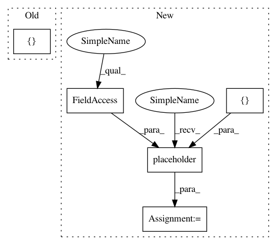

da98baaf6899c5639e23316f2ae00f60f080d14b,texar/models/tsf/tsf_classifier_att_lm_rec.py,TSFClassifierAttLMRec,_build_inputs,#TSFClassifierAttLMRec#,74
Before Change
collections_input = self._hparams.collections + "/input"
input_tensors = utils.register_collection(
collections_input,
[("enc_inputs", enc_inputs),
("dec_inputs", dec_inputs),
("targets", targets),
("weights", weights),
("labels", labels),
("seq_len", seq_len),
("gamma", gamma),
("rho_f", rho_f),
("rho_r", rho_r),
])
return input_tensors
After Change
gamma = tf.placeholder(tf.float32, [], name="gamma")
rho_f = tf.placeholder(tf.float32, [], name="rho_f")
rho_r = tf.placeholder(tf.float32, [], name="rho_r")
rho_lm = tf.placeholder(tf.float32, [], name="rho_lm")
rho_rec = tf.placeholder(tf.float32, [], name="rho_rec")
collections_input = self._hparams.collections + "/input"
input_tensors = utils.register_collection(
In pattern: SUPERPATTERN
Frequency: 3
Non-data size: 5
Instances
Project Name: asyml/texar
Commit Name: da98baaf6899c5639e23316f2ae00f60f080d14b
Time: 2018-02-09
Author: zichaoy@cs.cmu.edu
File Name: texar/models/tsf/tsf_classifier_att_lm_rec.py
Class Name: TSFClassifierAttLMRec
Method Name: _build_inputs
Project Name: asyml/texar
Commit Name: da98baaf6899c5639e23316f2ae00f60f080d14b
Time: 2018-02-09
Author: zichaoy@cs.cmu.edu
File Name: texar/models/tsf/tsf_classifier_att_lm_rec.py
Class Name: TSFClassifierAttLMRec
Method Name: _build_inputs
Project Name: asyml/texar
Commit Name: 8160574230cfd9f3708a7594327e044704f3c6f2
Time: 2018-05-11
Author: tanbowen@sjtu.edu.cn
File Name: examples/lm_comparisons/embedding_tied_language_model.py
Class Name:
Method Name:
Project Name: asyml/texar
Commit Name: e1dba7bcd77899f2477b5fe37b247320d628cd73
Time: 2017-12-10
Author: zichaoy@cs.cmu.edu
File Name: texar/models/tsf/classifier.py
Class Name: Classifier
Method Name: _build_model